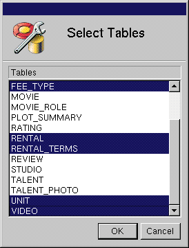

PATH
Documentation > WebObjects 4.5 >
EOF Tools and Techniques
 Table of Contents
Table of Contents  Previous Section
Previous Section
Updating Your Model
When you create a new model in EOModeler, the New Model Wizard prompts you to select the tables you want to include, as described in Choosing the Tables to Include. But what if you decide at a later point that you want your model to include tables you didn't select when you first created it? Or what if your database has been modified, and you want your model to reflect the changes?
To update an existing model, choose Model  New Updated Model. This creates a new model that you can use for cutting and pasting from. Using the New Updated Model command doesn't have a destructive effect on your original model-it just gives you a second model to use for "spare parts."
New Updated Model. This creates a new model that you can use for cutting and pasting from. Using the New Updated Model command doesn't have a destructive effect on your original model-it just gives you a second model to use for "spare parts."
When you invoke New Updated Model, EOModeler opens a Select Tables panel (shown in Figure 9) that lets you specify the tables you want in the "spare parts" model. By default, the Select Tables panel selects only tables that aren't represented in your working model; accepting the selection creates a new, complementary model.

Figure 9. Selecting Tables for the New Updated Model
Table of Contents  Next Section
Next Section